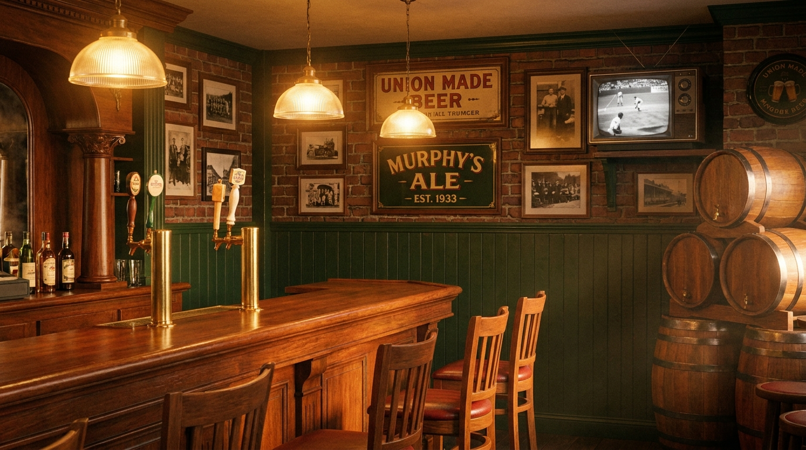
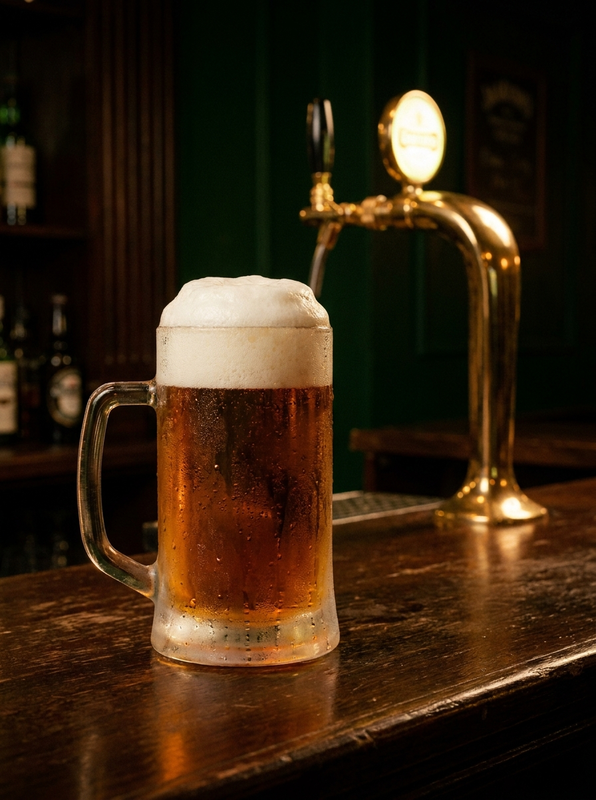
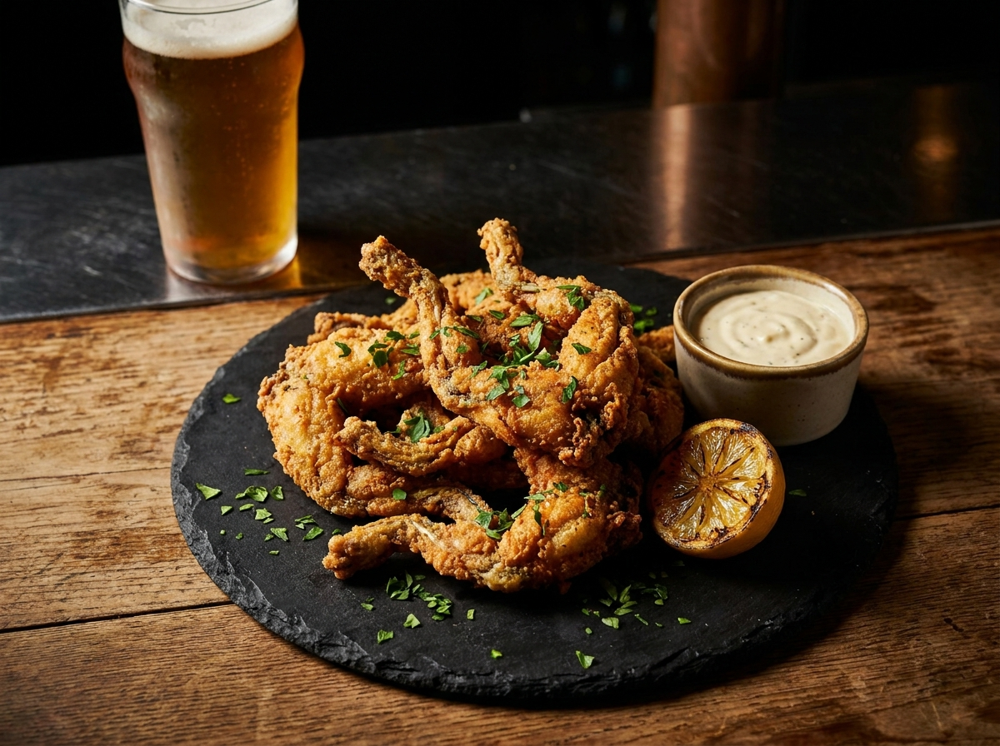
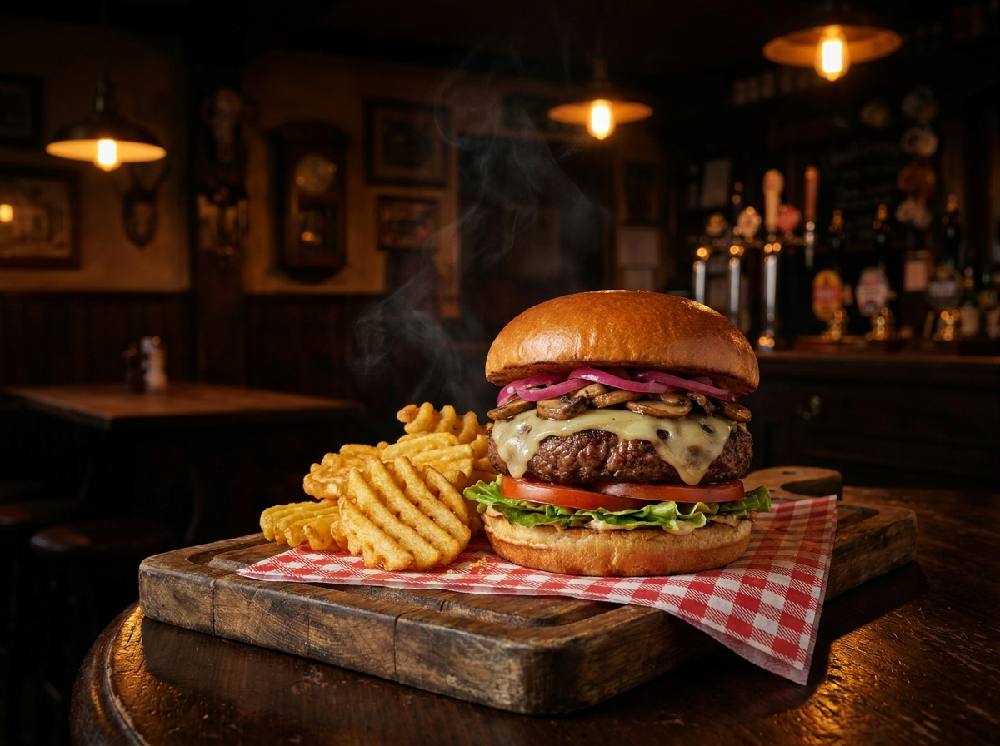

The Green Frog Inn has been on the corner of Spring & Sherman in Bloomingdale since 1933 — but for 20 of those years, it was Cindy Henry's bar. Today her daughter Elizabeth is back behind the wood, keeping the family business in the family.

She bought the Frog in 2003 and ran it like her own living room for the next twenty years. Knew every regular's drink before they sat down. Made strangers feel like neighbors.
Pancreatic cancer took her in January 2024 — just two months before we lost the Mayor too. Forty-nine years married.
Cindy Kocks was a 17-year-old cashier. Tom Henry was a 21-year-old security guard. He asked her out. They got married two years later on June 21, 1975. They stayed married 49 years.
In 2003 Cindy bought a tired little corner pub in Bloomingdale called the Green Frog. In 2008 Tom became Mayor of Fort Wayne. For sixteen years they ran a city and a corner bar at the same time. Nobody was surprised when the bar held its own.
Corner of Spring & Sherman, in the German-Catholic Bloomingdale neighborhood. A tiny corner pub. A frog painted on the door.
The Frog passed hand to hand through Bloomingdale families for 70 years. Same wood bar. Same regulars' grandkids.
Cindy walks in as owner. The regulars call her Mama Frog within a year. The frog legs go on the menu and never come off.
Fort Wayne elects Tom Henry mayor. He'd hold the office for 16 years — the longest tenure in city history. Cindy keeps pouring drafts on the side.
After her 2022 pancreatic cancer diagnosis, Cindy sells the Frog to Corey Noble and Stephanie Bonner — a Waynedale native and a NYC craft-beer veteran. They bring "a little Brooklyn back to Fort Wayne."
Cindy passes peacefully at home on January 20, 2024. She was 67. A mass at Most Precious Blood. A line out the door at the visitation.
Stomach cancer complications. Tom was 71. Fort Wayne mourns its longest-serving mayor — and the regulars at the Frog mourn their neighbor.
Fort Wayne bar veteran Eric Kissinger buys the building and reopens the doors on October 25, 2024 — refreshed inside, same neighborhood feel, same frog legs.
Cindy & Tom's daughter Elizabeth Henry takes the bar back into the family. The regulars start calling her Mama Frog Jr. almost immediately. Same wood. Same flat top. Same name on the door. New chapter.
$2.25 for a 12oz house draft. $6.50 a pitcher. Guest taps rotate weekly — local pours from across northeast Indiana, a handful of national craft names, and one weird one we picked up because Eric liked the label.
tonight's pours →

Battered to order, fried golden, served with slaw and pub fries and creamy horsey sauce. Cindy put them on the menu in 2003 and at least three different owners since have tried to quietly drop them. The regulars always win.
thursday is all-you-can-eat. you've been warned. 🐸
Every burger is a 1/3-lb hand-formed steakburger smashed on the same seasoned flat-top we've used for a decade. The classic is $5.99 and we won't raise it. The cardiac arrest will hurt you. The frog burger is the move. Tuesday is build-your-own — $2 off any burger.
all nine burgers →
The Frog has been a Bloomingdale fixture for ninety-one years — through Prohibition's end, three wars, twelve presidents, the Great Recession, and one pandemic. The neighborhood kept showing up. The corner kept the lights on.
820 spring st · pull up a stool ✦
order ahead, walk in, watch the game, stay late.